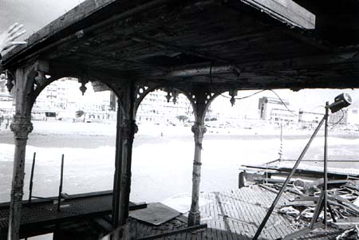
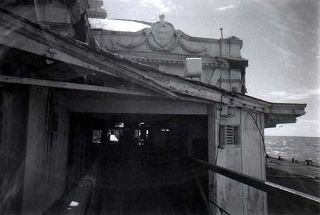
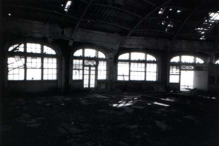
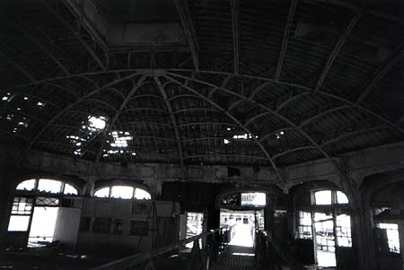

Jeremy Day >> Projects >> Take a promenade along West Pier >>
|
Exquisite detailing
We turn back to the tall, pale hotel blocks of the modern sea-front while the tour guide points out the delicate ironwork that fringes the porch outside the ballroom. The iron pillars (as always) look far too thin to be strong enough for the job. |
| This is not a safe structure It doesn't look safe, and it certainly doesn't smell safe, it smells like a bird-house, of shit and rotting feathers. What looks like it might be plaster decoration isn't of course, it is (like almost everything else) painted ironwork. Plaster would just dissolve in the salt air. |
| This space belongs to the birds Look closely and you can see them; pigeons, sat along the shattered window farmes, cooing in the roof, flapping in and out of the gaps in the ceiling. Even if we were allowed off the walkway, we wouldn't go; the floor is encrusted with shit, feathers, and maggoty pigeon corpses. |
|
The ribs of the Ballroom
This huge structure was originally a ballroom, then a dance-hall. At last it modernised, and got an arcade, but the West Pier never was a good moderniser, and just got shabbier and tattier and dirtier until it was closed. Yes, but what colour is it?. |